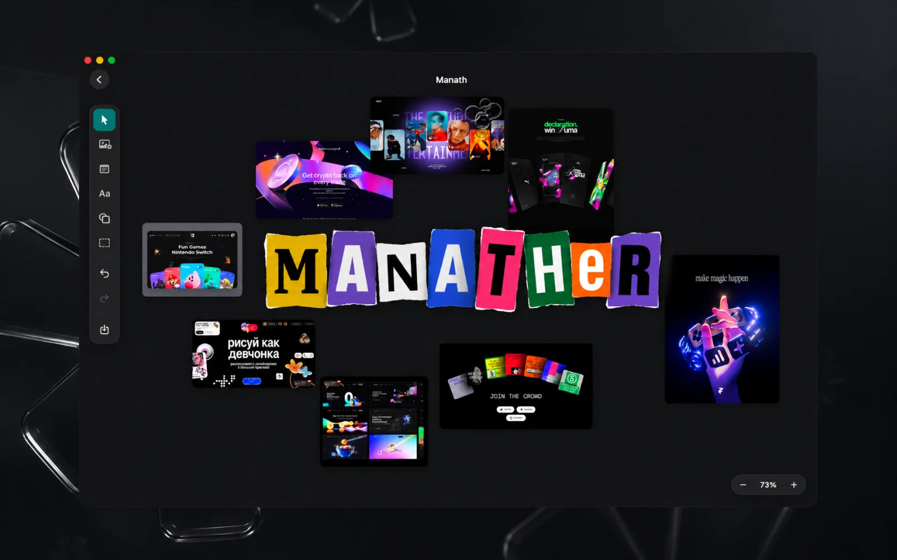
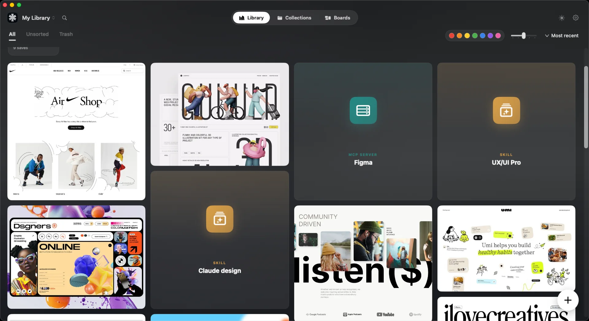
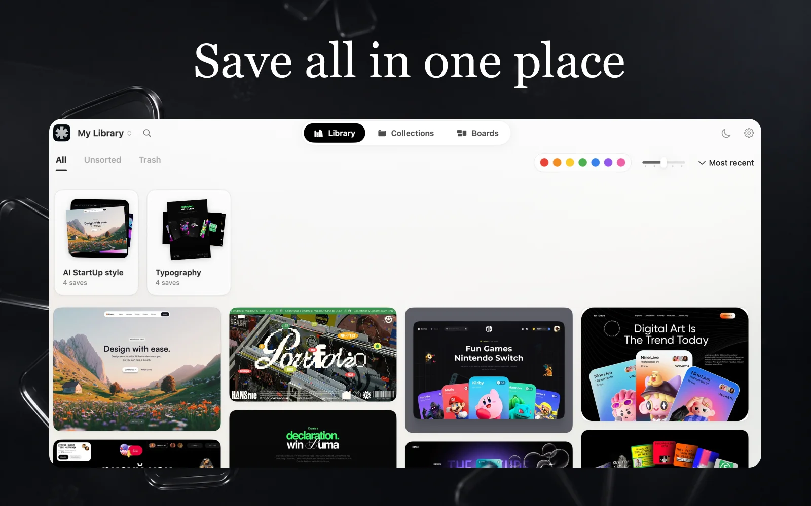
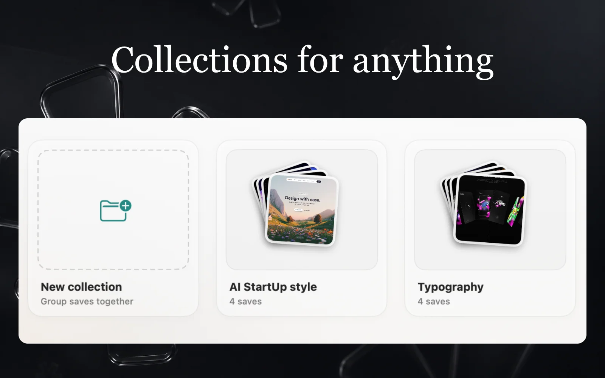

Boards
An infinite canvas for moodboards. Drop in library images, notes, shapes, and arrows. Move, resize, rotate, then export the board as a PNG.
Collect references, skills, MCP servers, snippets, and prompts. Export any project as a context pack your agent can read.

~/.claude
Every new project starts with the same archaeology: digging up references, prompts, and configs you already had somewhere.
Manather is one home for all of it. Save your building blocks once, organize them visually, and hand a whole project to your agent as a single clean folder it can read.


$ ls my-project-context-pack/
CLAUDE.md manifest.json
assets/ skills/ snippets/
✓ ready for your agent
An infinite canvas for moodboards. Drop in library images, notes, shapes, and arrows. Move, resize, rotate, then export the board as a PNG.
Images and video, web links, code snippets, MCP servers, skills, and prompts, all in one grid.
Filter by color: seven hues, extracted automatically on import. Full-text search covers titles, notes, tags, and code.
Generate image variations and auto-tag with vision. Bring any provider: OpenAI, Anthropic, Gemini, Ollama, and more. Keys stay in the Keychain.
Pure Swift, no web wrapper. Light and dark themes, keyboard shortcuts, and fluid motion throughout.
One asset can live in many collections at once, so a color palette can sit in every project that uses it. Keep separate libraries per client and share any of them as a zip.
Manather doubles as a local MCP server. Claude Code, Cursor, or anything that speaks MCP can search your library, pull assets, add new ones, and export whole collections while you work.
$ claude mcp add --transport http manather \
http://127.0.0.1:4319/mcp \
--header "Authorization: Bearer <your-token>"
✓ manather connected
$ The server runs only while Manather is open, and only after you turn it on in Settings.
It listens on 127.0.0.1 and requires a private token. Nothing is reachable from outside your Mac.
Per-capability toggles let an agent search but not create, or read but not export. Changes apply instantly.
A context pack is a clean folder your agent reads top to bottom. Pick the format that matches your tool.
Sample contents. Click a file to peek inside.
The library: a masonry grid with color filter and search.
Files are copied into the app sandbox and never uploaded anywhere. AI features call only the provider you configure, with your own key, and only when you use them.
Prefer to build it yourself? macOS 14 and Xcode 16 are all you need.
git clone https://github.com/Manath-iq/Manather.git && open Manather/manather.xcodeproj
Free. For Apple Silicon Macs on macOS 14 or newer.
brew install --cask manath-iq/manather/manather
The .dmg is not notarized by Apple yet, so the first launch shows a Gatekeeper warning: right-click the app and choose Open. Homebrew installs skip the warning entirely.
Shipped: the multi-type library, Boards, collections with context-pack export, and the MCP server. Next up: project templates. Follow along in the changelog.
Yes. It is free, MIT-licensed open source. No account, no subscription, no paid tier.
Nowhere. Everything lives in the app sandbox on your Mac. AI features call the provider you configured with your own key, and only when you trigger them.
The prebuilt app targets Apple Silicon on macOS 14 or newer. Intel Macs are not supported.
Claude Code out of the box, anything that speaks MCP, and any tool that reads AGENTS.md or a plain markdown context pack.
No. The library, boards, collections, and export all work without one. A key only unlocks the optional AI extras: image variations, vision auto-tagging, and AI-written export briefs.